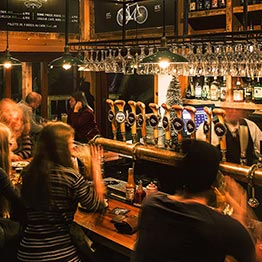

Дело было в 1843 году. Господин Якуб Пинкас – портной, выполняющий, помимо прочего, пошив священнического облачения для францисканского монастыря, – прослышав о новом пиве, которое недавно начали варить на Мещанском пивоваренном заводе в Пльзене, договаривается со своим другом – возчиком Мартином Салцманном, – который 8 апреля 1843 г. привозит ему два ведра этого нового пльзеньского пива . более ста полулитровых кружек за один день.В чём же секрет того, что это пиво так отличается от всех видов, производившихся до того времени? Дело в том, что оно изготовляется по новому методу – нижнего брожения, придающего пиву совершенно новый характер и внешний вид. Якуб Пинкас был настолько очарован красотой и занимательностью нового пльзеньского пива, что дал его попробовать своим друзьям из числа респектабельных пражан, а также всем возчикам фиакров, стоянка которых находилась на нынешней площади Юнгманна.
Ввиду того, что все они были очарованы в такой же степени, как и Пинкас, и всё больше находилось людей, желавших отведывать его снова и снова, Якуб Пинкас вскоре забросил портняжный промысел и стал трактирщиком, дав, таким образом, начало традиции самого прославленного чешского пивного ресторана U Pinkasu. Благодаря своей исключительности, качеству пива и способу его подачи пивная U Pinkasu почти моментально сделалась центром общественных и политических событий. Желающих отведать качественное пльзеньское пиво к Пинкасам ходило всё больше и больше, так что первоначальное помещение пивной со временем стало тесным. Поэтому в 1876 году Пинкасы приобрели соседний дом № 756, который хотя также имеет фасад в стиле классицизма, однако этот фасад закрывает более старую застройку.
Некоторые факты
Обширные готические подвалы этого дома доходят до территории бывшего конвента кармелитов, а над ними стоят стены времён барочной перестройки с сохранившимся порталом эпохи Возрождения, ведущим на улицу. Начиная с 1882-83 гг. в ресторане работала семья Брабецев, и ресторан, таким образом, вплоть до национализации носил имя «Brabcova plzeňská restaurace U Pinkasu». Господин Брабец был авторитетным трактирщиком. Продолжительное время он был одним из старейших членов Центрального объединения. чехословацкого ресторанного дела «Hostimil», где он работал более 50 лет.
В число посетителей пивной входил ряд известных деятелей. В мемориальной книге за тридцатые и сороковые годы на первом месте стоит подпись папского прелата Варнавы. В 1935 году здесь появились автографы артистов Зденека Штепанека, Ладислава Пешека, Йозефа Грусса, Лудвика Веверки, писателя Франтишека Лангра. Незабываемые фразы были написаны и господами Восковецем и Верихом, а также их другом Ярославом Ежеком.
Над запотевшей кружкой пива в нашей стране уже было произнесено многое – весёлые приключения, воспоминания о золотых временах, а также серьёзные дискуссии общественного и национального значения. Именно ресторан U Pinkasu уже во второй половине XIX века стал центром чешского патриотизма – его посещали маститые политики и другие титаны нашей истории: Франтишек Палацки, Франтишек Ладислав Ригер, Йозеф Юнгманн, Т. Г. Масарик, Ян Масарик и многие другие. После 1989 года наследники последнего владельца ресторана Франтишека Брабеца предъявили свои реституционные требования, вновь открыли ресторан U Pinkasu после перестройки в конце 1991 года и содержали его вплоть до середины 2001 года, когда всё здание было выкуплено компанией Adria-Neptun spol. s r.o. Её бизнес-планом является продолжение знаменитой истории разлива пльзеньского пива в ресторане U Pinkasu и создание здесь приятной атмосферы для всех, кто любит хорошее пиво и традиционную чешскую гастрономию.